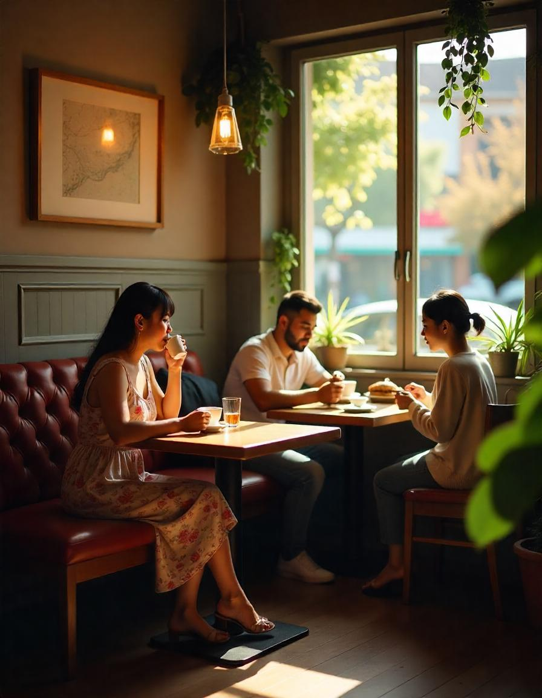

Nuestra Historia
Cafetería Veintiuno nació en el corazón de Zaragoza como un sueño compartido por dos amigos apasionados por el café y la repostería. Inspirados por sus viajes alrededor del mundo, quisieron traer un pedacito de cada cultura y combinarlo con ingredientes locales para ofrecer una experiencia única. Desde 2021, hemos servido café de especialidad, alimentos frescos y un ambiente acogedor para nuestra comunidad.
